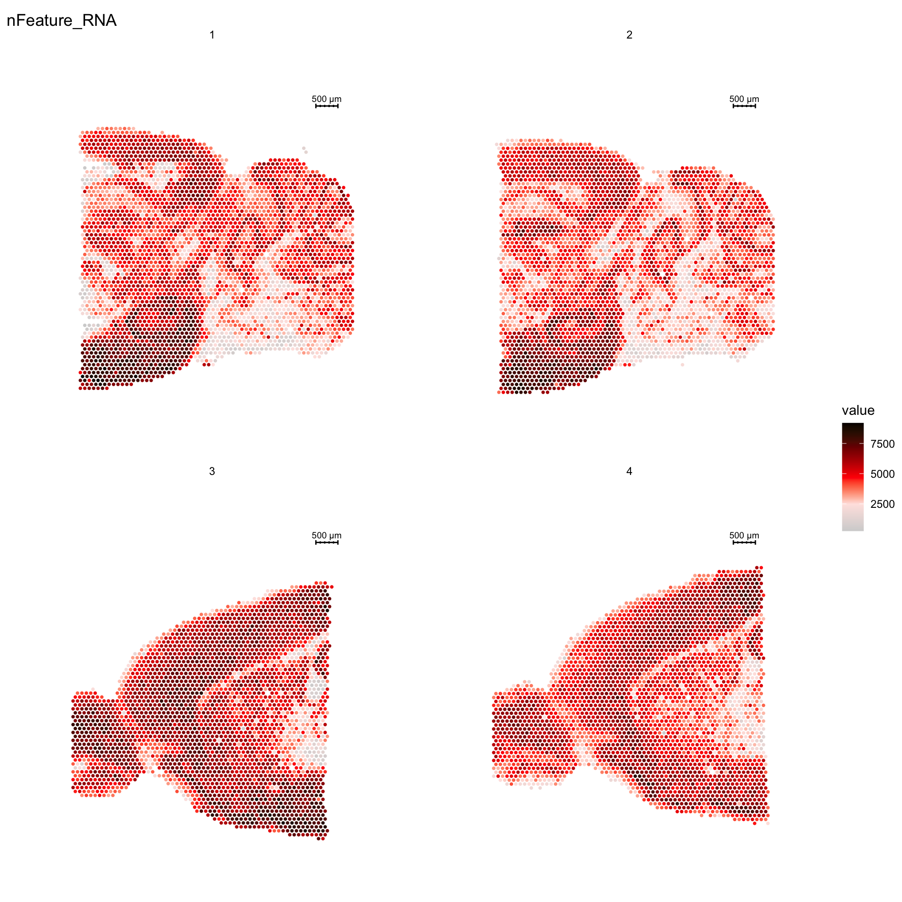

Last updated: 2019-10-31
Checks: 5 1
Knit directory: STUtility_web_site/
This reproducible R Markdown analysis was created with workflowr (version 1.3.0). The Checks tab describes the reproducibility checks that were applied when the results were created. The Past versions tab lists the development history.
Great! Since the R Markdown file has been committed to the Git repository, you know the exact version of the code that produced these results.
Great job! The global environment was empty. Objects defined in the global environment can affect the analysis in your R Markdown file in unknown ways. For reproduciblity it’s best to always run the code in an empty environment.
The command set.seed(20191031) was run prior to running the code in the R Markdown file. Setting a seed ensures that any results that rely on randomness, e.g. subsampling or permutations, are reproducible.
Great job! Recording the operating system, R version, and package versions is critical for reproducibility.
To ensure reproducibility of the results, delete the cache directory getting_started_cache and re-run the analysis. To have workflowr automatically delete the cache directory prior to building the file, set delete_cache = TRUE when running wflow_build() or wflow_publish().
Great! You are using Git for version control. Tracking code development and connecting the code version to the results is critical for reproducibility. The version displayed above was the version of the Git repository at the time these results were generated.
Note that you need to be careful to ensure that all relevant files for the analysis have been committed to Git prior to generating the results (you can use wflow_publish or wflow_git_commit). workflowr only checks the R Markdown file, but you know if there are other scripts or data files that it depends on. Below is the status of the Git repository when the results were generated:
Ignored files:
Ignored: .DS_Store
Ignored: analysis/.DS_Store
Ignored: analysis/about_cache/
Ignored: analysis/getting_started_cache/
Ignored: analysis/image_processing_cache/
Ignored: analysis/normalization_cache/
Ignored: docs/.DS_Store
Unstaged changes:
Modified: analysis/normalization.Rmd
Modified: analysis/spatial_features.Rmd
Note that any generated files, e.g. HTML, png, CSS, etc., are not included in this status report because it is ok for generated content to have uncommitted changes.
These are the previous versions of the R Markdown and HTML files. If you’ve configured a remote Git repository (see ?wflow_git_remote), click on the hyperlinks in the table below to view them.
| File | Version | Author | Date | Message |
|---|---|---|---|---|
| html | 0754921 | Ludvig Larsson | 2019-10-31 | Build site. |
| html | 908fe2c | Ludvig Larsson | 2019-10-31 | Build site. |
| html | 54787b5 | Ludvig Larsson | 2019-10-31 | Build site. |
| html | d96da86 | Ludvig Larsson | 2019-10-31 | Build site. |
| Rmd | e4e84dc | Ludvig Larsson | 2019-10-31 | Added theme |
| html | 0c79353 | Ludvig Larsson | 2019-10-31 | Build site. |
| Rmd | 6257541 | Ludvig Larsson | 2019-10-31 | Publish the initial files for myproject |
| html | 2241363 | Ludvig Larsson | 2019-10-31 | Build site. |
| Rmd | 8bae4fa | Ludvig Larsson | 2019-10-31 | Publish the initial files for myproject |
| html | a53305c | Ludvig Larsson | 2019-10-31 | Build site. |
| html | 6f61b95 | Ludvig Larsson | 2019-10-31 | Build site. |
| Rmd | 429c12c | Ludvig Larsson | 2019-10-31 | Publish the initial files for myproject |
Firt you need to load the library into your R session.
library(STutility)After a typical ST experiment, we have the following three output files:
To use the full range of functions within STUtility, all three files are needed for each sample. However, all data analysis steps that do not involve the H&E image can be performed with only the count file as input.
To follow along this tutorial, download the test data set at TODO:[insert test data set link]. The downloadable content consists of count files, output from our spot detector tool, H&E stained images as well as an “infoTable” to read in the files into R.
The recommended method to read the files into R is via the creation of a “infoTable”, which is a table with three columns “samples”, “spotfiles” and “imgs”.
These columns are mandatory to include in the infoTable. However, spotfiles and imgs can be left empty if the user do not wish to include the image in the analysis workflow.
any number of extra columns can be added with metadata. This information can then be used to e.g. coloring of plots and subsetting. These columns can be named as you like.
Lets load the provided infoTable
infoTable <- read.table("~/STUtility/inst/extdata/metaData_mmBrain.csv", sep=";", header=T, stringsAsFactors = F)[c(1, 5, 6, 7), ]The provided count matrix consists of EnsambleIDs (with version id) as gene names. Gene symbols are often a preference for easier reading, and we provide a transformation table accordingly.
#Transformation table for geneIDs
ensids <- read.table(file = list.files(system.file("extdata", package = "STutility"), full.names = T, pattern = "mouse_genes"), header = T, sep = "\t", stringsAsFactors = F)We are now ready to load our samples and create a “seurat” object.
Here, we demonstrate the creation of the seurat object, while also including some filtering by only keeping the genes that are found in at least 5 capture spots and a total count value >= 100. We also only keep the spots that contains >= 500 total transcripts. As already mentioned, we recommend users to include a column named “imgs” with paths to the HE stained histological images. The images are not loaded into the Seurat object to begin with but are neccessary if you want to overlay any gene expression values. The “spotfiles” column should include paths to “selection tables” which are files containing tabular information about spots located under the tissue as well as “pixel coordinates” coordinates specifying where the spots are centered on the corresponding HE images. Without this information, you will not be able to overlay gene expression on top of the image properly so we highly recommend you to include this information into the infoTable. Finally, the “samples” column should provide paths to the gene count matrices (either .tsv or .h5 format).
If you wish to include other meta data you can just add any number of columns into your infoTable which will be stored in the meta.data slot of the Seurat object.
Note that you have to specify which platform the data comes from. The default platform is 10X Visium but if you wish to run data from another platform there is support for “1k” and “2k” arrays. You can also mix datasets from different platforms by specifying one of; “Visium”, “1k” or “2k” in a separate column of the infoTable named “platform”. You just have to make sure that the datasets have gene symbols which follows the same nomenclature.
#DOUBLE CHECK SO THAT THIS IS CORRECT NOW
#TODO: add warnings if ids missmatch. Check that ids are in the data.frame ...
se <- InputFromTable(infotable = infoTable,
min.gene.count = 100,
min.gene.spots = 5,
min.spot.count = 500,
annotation = ensids,
platform = "2k",
pattern.remove = "^mt-")[1] "Removing all spots outside of tissue"
Loading ~/STUtility/inst/extdata/counts/Hippo1.tsv.gz count matrix from a '2k' experiment
Loading ~/STUtility/inst/extdata/counts/Hippo5.tsv.gz count matrix from a '2k' experiment
Loading ~/STUtility/inst/extdata/counts/Hippo6.tsv.gz count matrix from a '2k' experiment
Loading ~/STUtility/inst/extdata/counts/Hippo7.tsv.gz count matrix from a '2k' experiment
Using provided annotation table with id.column 'gene_id' and replace column 'gene_id' to convert gene names
------------- Filtering (not including images based filtering) --------------
Spots removed: 182
Genes removed: 5
Removing 27 genes matching '^mt-' regular expression
After filtering the dimensions of the experiment is: [9995 genes, 4375 spots]
Once you have created a Seurat object you can process and visualize your data just like in a scRNA-seq experiment and make use of the plethora of functions provided in the Seurat package. There are many vignettes to get started available at the Seurat web site.
Some of the functionalities provided in the Seurat package are not yet supported by STUtility, such as dataset integration and multimodal analysis. These methods should in principle work if you treat the data like a scRNA-seq experiment, but you will not be able to make use of the image related data or the spatial visualization functions.
For example, if you wish to explore the spatial distribution of various features on the array coordinates you can do this using the ST.FeaturePlot() function.
ST.FeaturePlot(se, features = c("nFeature_RNA"), dark.theme = T, cols = c("black", "dark blue", "cyan", "yellow", "red", "dark red"))
| Version | Author | Date |
|---|---|---|
| d96da86 | Ludvig Larsson | 2019-10-31 |
In the next section we will show how you can load images inbto the Seurat object and how they can be manipulated to improve interpretability of you results.
A work by Joseph Bergenstråhle and Ludvig Larsson
sessionInfo()R version 3.6.1 (2019-07-05)
Platform: x86_64-apple-darwin15.6.0 (64-bit)
Running under: macOS Mojave 10.14.6
Matrix products: default
BLAS: /Library/Frameworks/R.framework/Versions/3.6/Resources/lib/libRblas.0.dylib
LAPACK: /Library/Frameworks/R.framework/Versions/3.6/Resources/lib/libRlapack.dylib
locale:
[1] en_US.UTF-8/en_US.UTF-8/en_US.UTF-8/C/en_US.UTF-8/en_US.UTF-8
attached base packages:
[1] parallel stats4 stats graphics grDevices utils datasets
[8] methods base
other attached packages:
[1] STutility_0.1.0 ggplot2_3.2.1
[3] SingleCellExperiment_1.6.0 SummarizedExperiment_1.14.1
[5] DelayedArray_0.10.0 BiocParallel_1.18.1
[7] matrixStats_0.55.0 Biobase_2.44.0
[9] GenomicRanges_1.36.1 GenomeInfoDb_1.20.0
[11] IRanges_2.18.3 S4Vectors_0.22.1
[13] BiocGenerics_0.30.0 Seurat_3.1.1
loaded via a namespace (and not attached):
[1] backports_1.1.5 workflowr_1.3.0
[3] systemfonts_0.1.1 plyr_1.8.4
[5] igraph_1.2.4.1 lazyeval_0.2.2
[7] splines_3.6.1 crosstalk_1.0.0
[9] listenv_0.7.0 digest_0.6.22
[11] foreach_1.4.7 htmltools_0.4.0
[13] viridis_0.5.1 magick_2.2
[15] tiff_0.1-5 gdata_2.18.0
[17] magrittr_1.5 cluster_2.1.0
[19] doParallel_1.0.15 ROCR_1.0-7
[21] globals_0.12.4 RcppParallel_4.4.4
[23] R.utils_2.9.0 jpeg_0.1-8
[25] colorspace_1.4-1 ggrepel_0.8.1
[27] xfun_0.10 dplyr_0.8.3
[29] crayon_1.3.4 RCurl_1.95-4.12
[31] jsonlite_1.6 zeallot_0.1.0
[33] survival_2.44-1.1 zoo_1.8-6
[35] iterators_1.0.12 ape_5.3
[37] glue_1.3.1 gtable_0.3.0
[39] zlibbioc_1.30.0 XVector_0.24.0
[41] webshot_0.5.1 leiden_0.3.1
[43] future.apply_1.3.0 scales_1.0.0
[45] bibtex_0.4.2 miniUI_0.1.1.1
[47] Rcpp_1.0.2 metap_1.1
[49] viridisLite_0.3.0 xtable_1.8-4
[51] reticulate_1.13 rsvd_1.0.2
[53] SDMTools_1.1-221.1 tsne_0.1-3
[55] htmlwidgets_1.5.1 httr_1.4.1
[57] gplots_3.0.1.1 RColorBrewer_1.1-2
[59] ica_1.0-2 pkgconfig_2.0.3
[61] R.methodsS3_1.7.1 uwot_0.1.4
[63] labeling_0.3 tidyselect_0.2.5
[65] rlang_0.4.1 manipulateWidget_0.10.0
[67] reshape2_1.4.3 later_1.0.0
[69] munsell_0.5.0 tools_3.6.1
[71] ggridges_0.5.1 evaluate_0.14
[73] stringr_1.4.0 fastmap_1.0.1
[75] yaml_2.2.0 npsurv_0.4-0
[77] knitr_1.25 fs_1.3.1
[79] fitdistrplus_1.0-14 rgl_0.100.30
[81] caTools_1.17.1.2 purrr_0.3.2
[83] RANN_2.6.1 readbitmap_0.1.5
[85] pbapply_1.4-2 future_1.14.0
[87] nlme_3.1-141 whisker_0.4
[89] mime_0.7 R.oo_1.22.0
[91] ggiraph_0.6.1 xml2_1.2.2
[93] compiler_3.6.1 plotly_4.9.0
[95] png_0.1-7 lsei_1.2-0
[97] Morpho_2.7 tibble_2.1.3
[99] stringi_1.4.3 gdtools_0.2.0
[101] lattice_0.20-38 Matrix_1.2-17
[103] shinyjs_1.0 vctrs_0.2.0
[105] pillar_1.4.2 lifecycle_0.1.0
[107] Rdpack_0.11-0 lmtest_0.9-37
[109] RcppAnnoy_0.0.13 data.table_1.12.2
[111] cowplot_1.0.0 bitops_1.0-6
[113] irlba_2.3.3 Rvcg_0.18
[115] gbRd_0.4-11 httpuv_1.5.2
[117] colorRamps_2.3 imager_0.41.2
[119] R6_2.4.0 promises_1.1.0
[121] bmp_0.3 KernSmooth_2.23-15
[123] gridExtra_2.3 codetools_0.2-16
[125] MASS_7.3-51.4 gtools_3.8.1
[127] assertthat_0.2.1 rprojroot_1.3-2
[129] withr_2.1.2 sctransform_0.2.0
[131] GenomeInfoDbData_1.2.1 grid_3.6.1
[133] tidyr_1.0.0 rmarkdown_1.16
[135] Rtsne_0.15 git2r_0.26.1
[137] shiny_1.4.0